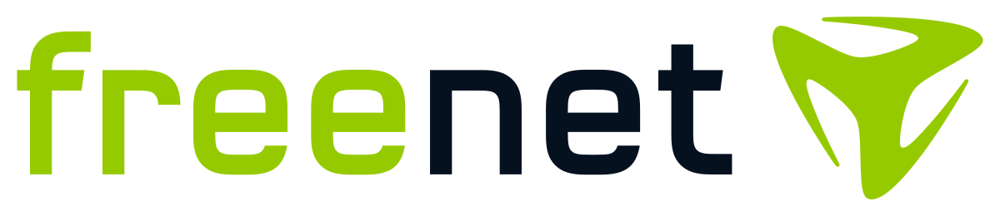
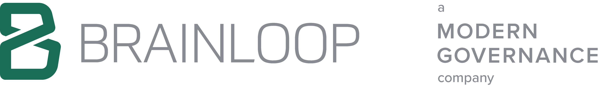
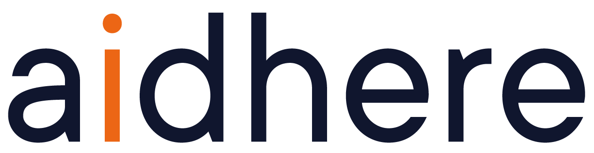
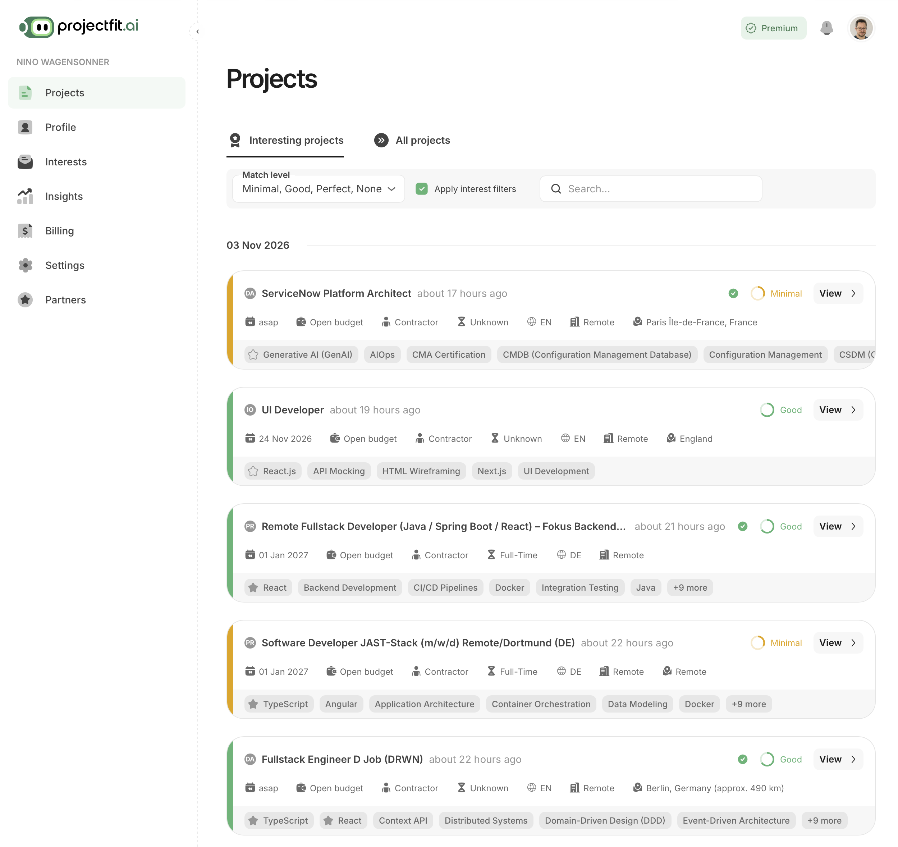

GraphQL- und API-Architektur, Beratung zu Schnittstellen und Datenmodellen.
Nino Wagensonner · Beratung & Entwicklung
Ich arbeite gerne mit Menschen, die etwas bewegen wollen, im Startup genauso wie im etablierten Unternehmen. Dabei denke ich ganzheitlich, vom Geschäftsmodell über die Technik bis zur Nutzung im Alltag. Gemeinsam machen wir aus guten Ideen durchdachte Produkte.
Jahre Berufserfahrung mit Software und IT. Aus unterschiedlichen Projekten, Branchen und Rollen.
Projekterfahrung
Eine Auswahl meiner Arbeit

GraphQL- und API-Architektur, Beratung zu Schnittstellen und Datenmodellen.
Mitentwicklung der ZEIT Shop App mit Shopware-Anbindung und automatisierter Veröffentlichung für iOS und Android.

Entwicklung an sicheren Datenräumen, Microservices und Migration sensibler Daten.

App- und Backend-Entwicklung sowie Mentoring des Entwicklungsteams.
Eigene Produktentwicklung
KI-gestütztes Projektmatching für IT-Freelancer
projectfit.ai gleicht Fähigkeiten und Präferenzen von IT-Freelancern mit Projektanforderungen ab. Die Herausforderung: passende Projekte finden, auch wenn dieselbe Fähigkeit unterschiedlich beschrieben wird.
Als Mitgründer arbeite ich an Produktentwicklung, LLM- und Prompt Engineering sowie der Integration in TypeScript und React. Dazu kommen Vertrieb und Geschäftsentwicklung.
Projekt im Portfolio ansehen
Ansicht vergrößern ↗Für Entwurf und Prototyping nutze ich je nach Aufgabe Figma, Sketch, Adobe XD, Blender und Photoshop.
Datenbanken, Messaging und RPC gehören ebenfalls dazu: unter anderem PostgreSQL, MySQL, MongoDB, Cassandra, Neo4j, RabbitMQ und gRPC.
Mein Angebot umfasst außerdem KI-Workflows, Modellauswahl und Evaluation, Training und Embeddings — verbunden mit Benutzeroberflächen, Schnittstellen, Tests und produktivem Betrieb. Weitere Werkzeuge aus meiner Praxis sind Ollama, HDBSCAN, TensorFlow und NumPy.
Leistungen
Was lässt sich weiterverwenden? Was muss sich ändern? Ich prüfe Ihre Software, ordne die Möglichkeiten ein und erarbeite mit Ihnen die nächsten Schritte.
Ich entwickle Anwendungen, verbinde Systeme und modernisiere bestehende Software — von der Architektur bis zum Code.
Ich verstehe LLMs technisch und im praktischen Einsatz. Daraus entwickle ich Anwendungen mit der Qualität, die Sie von Unternehmenssoftware erwarten: gut bedienbar, kontrollierbar und zuverlässig im Betrieb.
Ich steige in laufende Projekte ein, kläre technische Fragen und teile mein Wissen in der gemeinsamen Arbeit.
Arbeitsweise
Ich bin technischer Generalist. Ich sehe mir an, wie die Teile zusammenhängen, und gehe ins Detail, wo es nötig ist. Meine Erfahrung reicht von Apps und Backend-Systemen bis zu Infrastruktur und KI.
Was möchten Menschen mit der Software erreichen? Wo verlieren sie Zeit, wo kommen sie nicht weiter? Ich gehe den Ablauf mit Ihnen durch. Daraus leiten wir ab, was die Lösung leisten muss.
Bedienbarkeit, Performance, Sicherheit und Betrieb gehören für mich zur Technikwahl. Ich prüfe, was sich weiterverwenden lässt und welche Lösung Ihr Team langfristig betreuen kann.
Wir bringen früh eine nutzbare Version in die Hände der Anwender. Rückmeldungen zeigen, wo wir richtig liegen und was sich ändern muss. Neue Erkenntnisse fließen in die nächsten Schritte ein.
KI für Ihre Produktentwicklung
Ich kombiniere KI mit meiner Expertise, wo es sinnvoll ist. Im Mittelpunkt steht das beste Ergebnis für Sie und Ihre Nutzer.
Eigene Produkte & Forschung
Mit meiner GmbH Isar Innovations entwickle ich eigene Softwareprodukte.
Zur GmbHIn unseren Forschungsarbeiten untersuchen wir unter anderem, wie KI-Agenten Probleme bearbeiten und wie sich große Mengen von Kompetenzbezeichnungen ordnen lassen.
Alle ForschungsarbeitenKontakt
Erzählen Sie mir von Ihrem Vorhaben oder der technischen Frage, die Sie beschäftigt. Im ersten Gespräch klären wir, wie ich Sie unterstützen kann.
n.wagensonner@manyminds.deUnterschleißheim bei München · Remote & vor Ort